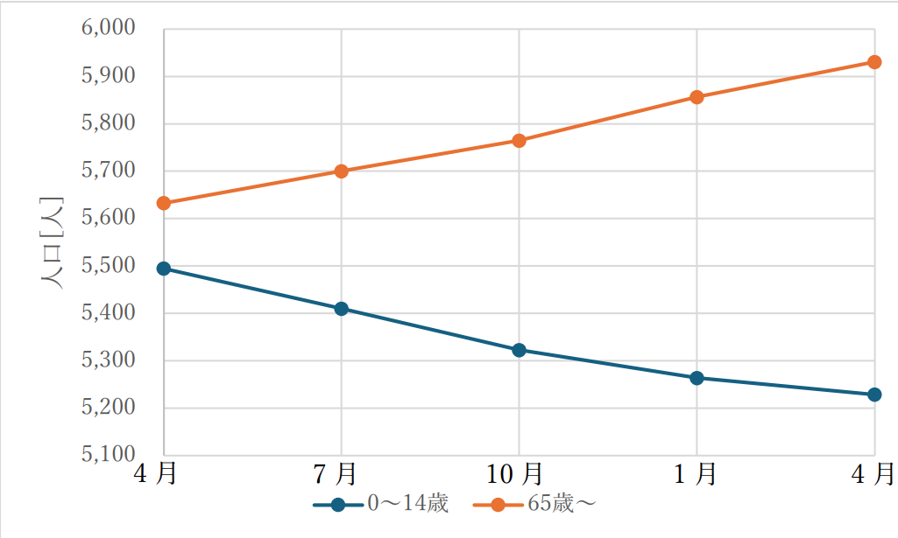
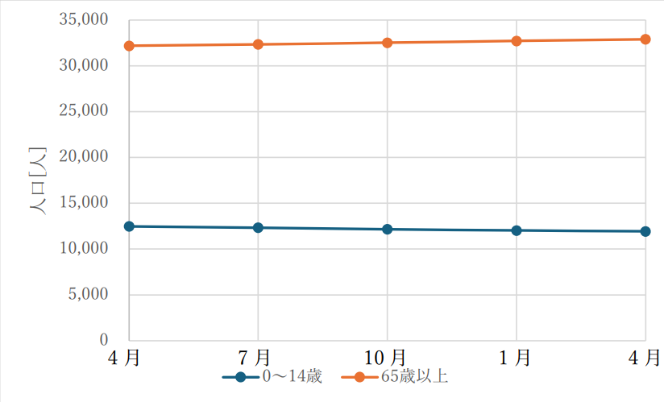

令和7年度の三田市全体とウッディタウンの人口推移を調べた。
0-14歳、65歳以上の人口を調査した。
下図に令和7年度のウッディタウンと三田市全体の0～14歳と65歳以上の人口推移を示す。
ウッディタウン


ウッディタウンの人口は高齢者は増加傾向にあり、子供は減少傾向にあった。
さらに市全体でも高齢者が多く、子供は高齢者と比べて少ないことが分かる。
これらは少子高齢化や人口流出が関係していると考えた。
そのため、若い世代が留まるように住みやすい環境作りや、子育て支援が大切なのではないかと考えた。